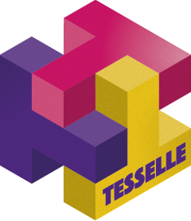

Read the doc
Quickly discover relevant content by searching the documentation or exploring the project bibliography.
tesselle is a collection of R packages for research and teaching in archaeology. These packages focus on quantitative analysis methods developed for archaeology. The tesselle packages are designed to work seamlessly together and to complement general-purpose and other specialized statistical packages. Learn more at tesselle.org.

Quickly discover relevant content by searching the documentation or exploring the project bibliography.